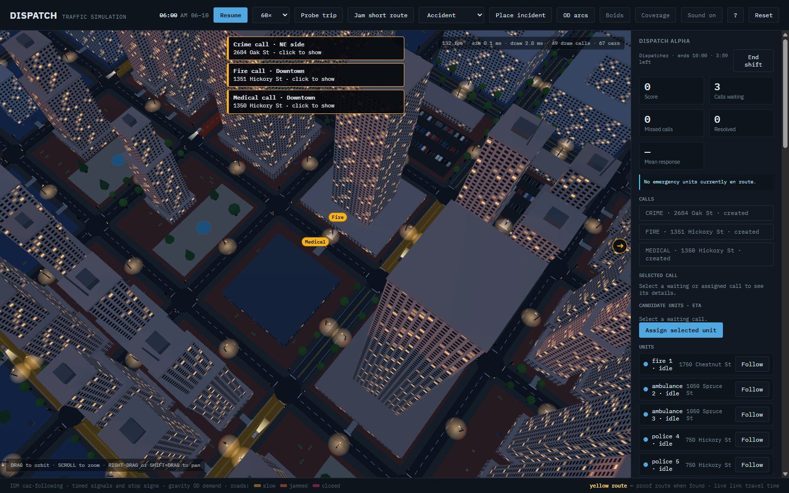
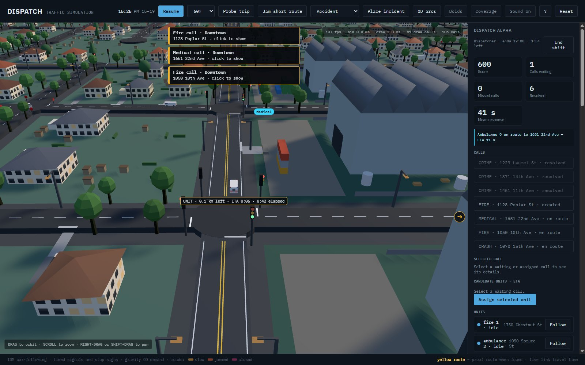
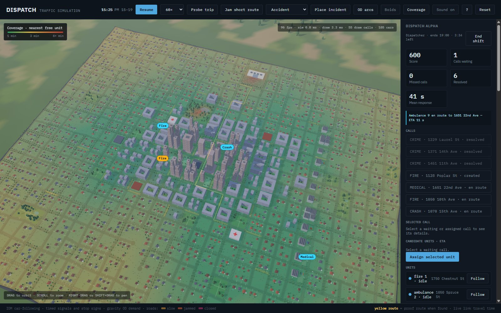
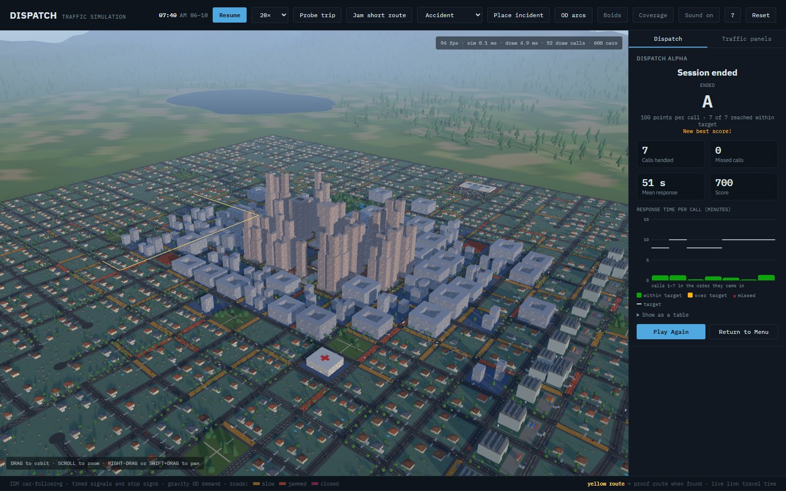

| Week | Engineering | Assets | Integration / milestone | Owner |
|---|---|---|---|---|
| W9 (Oct 26 – Nov 1), done | Emergency units in traffic; yielding (pull over, pass, merge back) and junction pre-emption; boids debug view; every building an address with its own entrance; door-to-door trips with left turns in and out; leisure trips; accidents and lane closures on one lane; dispatch core, scoring, difficulty, best scores; menu, HUD, end screen with response chart; random accidents; call alerts and edge arrows; reassigning returning units; shortcuts; ride along; coverage map; station placement; siren-aware unit ETAs | Ambulance, fire engine and police models; siren lights; station buildings; drawn entrances; block fill; siren audio, chime and UI sounds (all procedural) | MVP 2.0 integrated Oct 29, submitted Nov 2 | Both |
| W10 (Nov 2 – 8) | Mutual aid (send from further away when local units are busy); smarter turn-round for reassigned units | Anything left from A4 | Merge mid-week; play-test | Ananya: mutual aid; Mihir: turn-round, A4 fixes |
| W11 (Nov 9 – 15) | Multi-unit calls (crash needs police and ambulance; fire needs engine and ambulance); severity priority | UI icons; sound mix and volume settings | Merge end of week | Ananya: multi-unit; Mihir: sound, icons |
| W12 (Nov 16 – 22) | Ordinary cars reroute mid-trip when a closure appears; yielding tuning at intersections and on arterials | Night lighting of units, call markers | Feature-complete build | Mihir: rerouting; Ananya: polish |
| W13 (Nov 23 – 29) | Thanksgiving, light week: performance pass (1000 cars plus units), difficulty tuning | Final UI pass | Feature freeze Nov 29 | Both |
| W14 (Nov 30 – Dec 6) | Could-have only if ahead: adaptive signals, severity-weighted dispatch | Video recording, report figures | Release candidate Dec 6 | Both |
| W15 (Dec 7 – 13): buffer | No new features. Bug fixes, documentation, README, final report and video | Final submission | Both |



